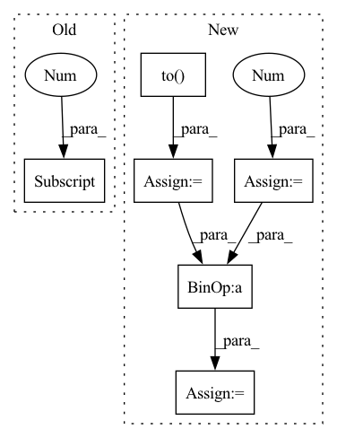

Pattern ID :41166

Before Change
if "whamr" in self.hparams.data_folder:
targets = self.hparams.reverb(
targets[0].t(), torch.ones(targets.size(-1))
)
targets = targets.t().unsqueeze(0)
mix = targets.sum(-1)
After Change
if "whamr" in self.hparams.data_folder:
mix = 0
for mic in rirs:
// rir_cat = torch.flip(torch.stack(mic), [1]).unsqueeze(0)
rir_cat = (torch.stack(mic)).unsqueeze(0)
rir_cat = rir_cat.to(self.device)
mix = mix + F.conv1d(
targets.permute(0, 2, 1), rir_cat
)
mix = mix.squeeze(1)
// fix the levels
coef = (
targets.abs().max().item() / mix.abs().max().item()
)
mix = mix * coef
// torchaudio.save("reverbtest.wav", mix.cpu(), 8000)
// torchaudio.save("target.wav", targets[:, :, 0].cpu(), 8000)
In pattern: SUPERPATTERN
Frequency: 3
Non-data size: 6
Instances
Fragment ID: 116069131
Project Name: speechbrain/speechbrain
Commit Name: 59bc3bf412dc5c1c2e9baf687ede623cc1c4c588
Time: 2021-03-19
Author: csubakan@gmail.com
File Name: recipes/WSJ0Mix/separation/train.py
M Class Name: Separation
N Class Name: Separation
M Method Name: compute_forward(6)
N Method Name: compute_forward(5)
M Parent Class: sb.Brain
N Parent Class: sb.Brain
M File Name: recipes/WSJ0Mix/separation/train.py
N File Name: recipes/WSJ0Mix/separation/train.py
M Start Line: 50
M End Line: 65
N Start Line: 42
N End Line: 79
'>
Before Change
edge_weights = torch.ones(edge_index.size(1), dtype=torch.int,
device=edge_index.device)
else:
edge_weights = np.ones(edge_index.shape[1], dtype=np.int)
degree = weighted_degree(index, edge_weights, num_nodes=num_nodes)
return edge_index, edge_weights / degree[index]
After Change
if backend is torch_sparse:
assert edge_weights is None
deg = edge_index.sum(dim=dim).to(torch.float)
deg_inv = deg.pow(-1.0)
deg_inv[deg_inv == float("inf")] = 0
edge_index = deg_inv.view(-1, 1) * edge_index
return edge_index, None
index = edge_index[dim]
'>
Fragment ID: 116069120
Project Name: torchspatiotemporal/tsl
Commit Name: 50089afdf23de12eb6d11e9d5e7e64d949d45611
Time: 2022-08-18
Author: ivan.marisca@hotmail.it
File Name: tsl/ops/connectivity.py
M Class Name: AnonimousClass
N Class Name: AnonimousClass
M Method Name: normalize(4)
N Method Name: normalize(4)
M Parent Class:
N Parent Class:
M File Name: tsl/ops/connectivity.py
N File Name: tsl/ops/connectivity.py
M Start Line: 181
M End Line: 187
N Start Line: 215
N End Line: 225
'>
Before Change
edge_weights = torch.ones(edge_index.size(1), dtype=torch.int,
device=edge_index.device)
else:
edge_weights = np.ones(edge_index.shape[1], dtype=np.int)
degree = weighted_degree(index, edge_weights, num_nodes=num_nodes)
return edge_index, edge_weights / degree[index]
After Change
if backend is torch_sparse:
assert edge_weights is None
deg = edge_index.sum(dim=dim).to(torch.float)
deg_inv = deg.pow(-1.0)
deg_inv[deg_inv == float("inf")] = 0
edge_index = deg_inv.view(-1, 1) * edge_index
return edge_index, None
index = edge_index[dim]
'>
Fragment ID: 116069124
Project Name: torchspatiotemporal/tsl
Commit Name: f28e5a2fddc34eeb90a13c113512c8ab12b6138b
Time: 2022-07-20
Author: ivan.marisca@hotmail.it
File Name: tsl/ops/connectivity.py
M Class Name: AnonimousClass
N Class Name: AnonimousClass
M Method Name: normalize(4)
N Method Name: normalize(4)
M Parent Class:
N Parent Class:
M File Name: tsl/ops/connectivity.py
N File Name: tsl/ops/connectivity.py
M Start Line: 181
M End Line: 187
N Start Line: 215
N End Line: 225